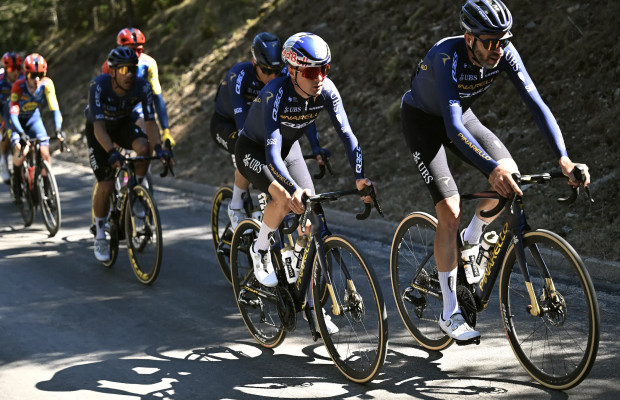

Como mejorar el ciclismo para triatlon
El ciclismo suele ser el tramo mas largo, por eso es clave construir base. Puedes combinar una salida larga suave con otra mas corta que tenga cambios de ritmo.
Tambien conviene practicar hidratacion y alimentacion durante la salida. Llegar bien al final de la bici ayuda mucho para empezar la carrera con buenas sensaciones.